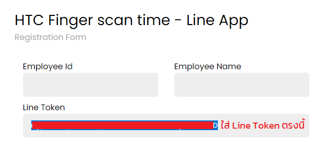

1. ไปที่ลิงค์ https://notify-bot.line.me/en/
- กรอก "อีเมล์" (E-mail) และ "รหัสผ่าน" (Password) Line ของเรา
- คลิกปุ่ม "Login" ดังรูป
- กรอก "อีเมล์" (E-mail) และ "รหัสผ่าน" (Password) Line ของเรา
- คลิกปุ่ม "Login" ดังรูป
- โดยการกรอกรหัสที่แสดงบนหน้าเว็บ ดังรูป
- คลิกที่เมนู "หน้าของฉัน" (My page) ดังรูป
- ให้คลิกที่ปุ่ม "Generate token" ดังรูป
- ในช่องว่างช่องแรก ให้เรากรอกชื่อ token ที่เราต้องการลงไป เช่น Time, Fingers โดยชื่อนี้จะเป็นชื่อที่ส่งข้อความมาหาเรา
- หลังจากนั้น ให้คลิกที่ชื่อไลน์ของเรา (1-on-1 chat with LINE Notify) ดังรูป
- คลิกที่ปุ่ม "Generate token" หรือ "ปุ่ม ออก Token" ที่อยู่ด้านล่างสุด
- คลิกปุ่มคัดลอก นำไปบันทึกไว้ในที่ปลอดภัย
- ส่วนแรกกรอก "รหัสพนักงาน" และ "ชื่อ-นามสกุล" จากนั้น Copy Token ของเราลงในช่อง Line Token
- โดยรูปแบบจะแบ่งออกเป็น 2 แบบคือ รายละเอียด (Time by person) และสรุปยอดรวม (Summary)
- ตัวอย่างรูปแบบ โดยแบบรายละเอียด จะประกอบด้วยชื่อหน่วยงาน ตามด้วยเวลาสแกนนิ้วของแต่ละบุคคลในหน่วยงาน
- และแบบสรุปยอดรวมจะประกอบด้วย ชื่อหน่วยงาน ตามด้วยจำนวนคน (จำนวนคนที่สแกนนิ้ว/จำนวนคนทั้งหมดในหน่วยงาน) ดังรูปด้านล่าง
- สามารถคลิกเลือกรับข้อมูลตามวันที่เราต้องการได้ จากนั้นคลิก Submit
- เมื่อลงทะเบียนสำเร็จระบบจะแสดงข้อความ Register successfully.
- กรอกรหัสพนักงานที่ได้ทำการลงทะเบียนไว้แล้ว จากนั้นคลิก Submit
- คลิกที่ Icon เพื่อเปิดใช้งาน
- คลิกที่ Icon เพื่อปิดใช้งาน
- คลิกที่ Icon เพื่อลบรายการ
- หลังจากที่คลิกดำเนินการต่างๆ ระบบจะส่ง OTP ไปที่ LINE Notify ดังรูปด้านล่าง
- นำรหัส OTP กรอกลงในแบบฟอร์ม จากนั้นคลิกที่ Submit เป็นอันจบขั้นตอน